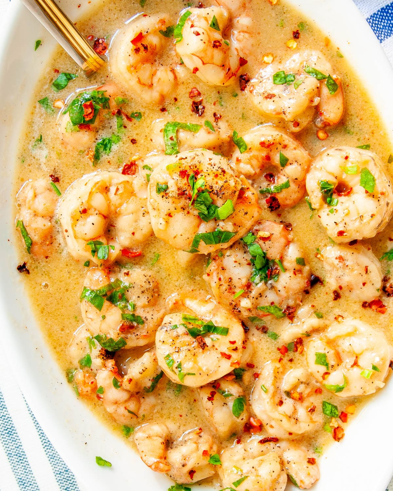

Recipe Book
recipe 1: shrimp scampi
|
ingredients:
(yield: 4 servings)
2 tablespoons butter |
instructions:
step 1 step 2 add shrimp and sauté until they just turn pink, 2 to 4 minutes depending upon their size. stir in the parsley and lemon juice and serve over pasta or accompanied by crusty bread. |
image of shrimp scampi (c/o Craving Home Cooked)
 recipe 2: linguine vongole
|
ingredients:
(yield: 4 servings) |
instructions:
step 1
step 2
step 3
step 4
step 5
step 6
step 7
step 8
purging the clams |
image of linguine (c/o The Kitchn)

recipe 3: steak-frites
|
ingredients:
(yields: 4 servings) |
instructions:
step 1
step 3
step 4
step 7
step 9
step 10
notes: if you’d like your steak a little more done add 1 minute per side of cooking and 1 extra minute of rest to get a medium internal temperature. this is not meant to be reheated or frozen, you should eat it the second it is finished. |
image of steak-frites (c/o Over The Fire Cooking)

recipe 4: carrot cake
|
ingredients:
(yields: 18 servings)
Cake: |
instructions:
step 1
step 2
step 3
step 4 |
image of carrot cake (c/o The Kitchn)